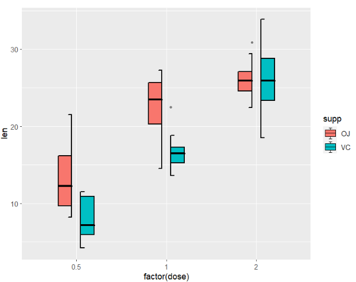

Chapter 3 geom_jjboxplot
I re-write the geom_boxplot based on my knowledge and I also add more parameters to control the graphs to be plot. The following shows the details.
3.1 basic plot
load test data first:
library(ggplot2)
library(jjPlot)
# load test data
data("ToothGrowth")
colnames(ToothGrowth)
# [1] "len" "supp" "dose"we can show the difference between the geom_jjboxplot and geom_boxplot:
pm <-
ggplot(ToothGrowth,aes(x = factor(dose),y = len)) +
geom_jjboxplot(aes(fill = factor(dose)))
pn <-
ggplot(ToothGrowth,aes(x = factor(dose),y = len)) +
geom_boxplot(aes(fill = factor(dose)))
cowplot::plot_grid(pm,pn,align = 'hv')
as you can see, I add a small segment on 1.5IQR line and in the legend.
you can also control the outlier points:
ggplot(ToothGrowth,aes(x = factor(dose),y = len)) +
geom_jjboxplot(aes(fill = factor(dose)),
outlier.color = 'black',
outlier.size = 5)here I supply a parameter(outlier.show) to remove the outlier points:
ggplot(ToothGrowth,aes(x = factor(dose),y = len)) +
geom_jjboxplot(aes(fill = factor(dose)),
outlier.show = F)we can use position_dodge to ajust group space:
ggplot(ToothGrowth,aes(x = factor(dose),y = len)) +
geom_jjboxplot(aes(fill = supp),
width = 0.8,
position = position_dodge(width = 1))here shows the multiple groups difference:
p3 <-
ggplot(ToothGrowth,aes(x = supp,y = len)) +
geom_jjboxplot(aes(fill = factor(dose)),
width = 0.6,
position = position_dodge(width = 0.75))
p3n <-
ggplot(ToothGrowth,aes(x = supp,y = len,
fill = factor(dose))) +
geom_boxplot()
cowplot::plot_grid(p3,p3n,align = 'hv')3.2 split boxplot
I supply four types to show the boxplot including full, split, left and right which can make boxplot more flexible for you.
full type(default mode):
ggplot(ToothGrowth,aes(x = factor(dose),y = len)) +
geom_jjboxplot(aes(fill = factor(dose)),
type = 'full')left type:
ggplot(ToothGrowth,aes(x = factor(dose),y = len)) +
geom_jjboxplot(aes(fill = factor(dose)),
type = 'left')we can use shift to ajust the position:
ggplot(ToothGrowth,aes(x = factor(dose),y = len)) +
geom_jjboxplot(aes(fill = factor(dose)),
type = 'left',
shift = -0.05)right type:
ggplot(ToothGrowth,aes(x = factor(dose),y = len)) +
geom_jjboxplot(aes(fill = factor(dose)),
type = 'right')we can use shift to ajust the position:
ggplot(ToothGrowth,aes(x = factor(dose),y = len)) +
geom_jjboxplot(aes(fill = factor(dose)),
type = 'right',
shift = 0.05)split type:
ggplot(ToothGrowth,aes(x = factor(dose),y = len)) +
geom_jjboxplot(aes(fill = factor(dose)),
type = 'split')in fact every boxplot includes two parts, you can also use shift to split them:
ggplot(ToothGrowth,aes(x = factor(dose),y = len)) +
geom_jjboxplot(aes(fill = factor(dose)),
type = 'split',
split.shift = 0.025)you can combine with other geom layer:
ggplot(ToothGrowth,aes(x = factor(dose),y = len)) +
geom_jjboxplot(aes(fill = factor(dose)),
type = 'split',
split.shift = 0.08) +
geom_violin(width = 0.15)3.3 mached legend
you can add mached legend to split boxplot:
ggplot(ToothGrowth,aes(x = factor(dose),y = len)) +
geom_jjboxplot(aes(fill = factor(dose)),
type = 'left',
key_glyph = draw_key_boxLeft)right:
ggplot(ToothGrowth,aes(x = factor(dose),y = len)) +
geom_jjboxplot(aes(fill = factor(dose)),
type = 'right',
key_glyph = draw_key_boxRight)split:
ggplot(ToothGrowth,aes(x = factor(dose),y = len)) +
geom_jjboxplot(aes(fill = factor(dose)),
type = 'split',
split.shift = 0.025,
key_glyph = draw_key_boxSplit)3.4 mapping with type
you can also define the type args as a mapping variable to draw different directions graphs especially for two sub-groups within group.
here we add a two types column into dataset:
# add type
ToothGrowth$type <- ifelse(ToothGrowth$supp == "OJ","left","right")mapping with type:
ggplot(ToothGrowth,aes(x = factor(dose),y = len)) +
geom_jjboxplot(aes(fill = supp,type = type),
width = 0.7)ajust group space:
ggplot(ToothGrowth,aes(x = factor(dose),y = len)) +
geom_jjboxplot(aes(fill = supp,type = type),
width = 0.7,
position = position_dodge(width = 0.2))